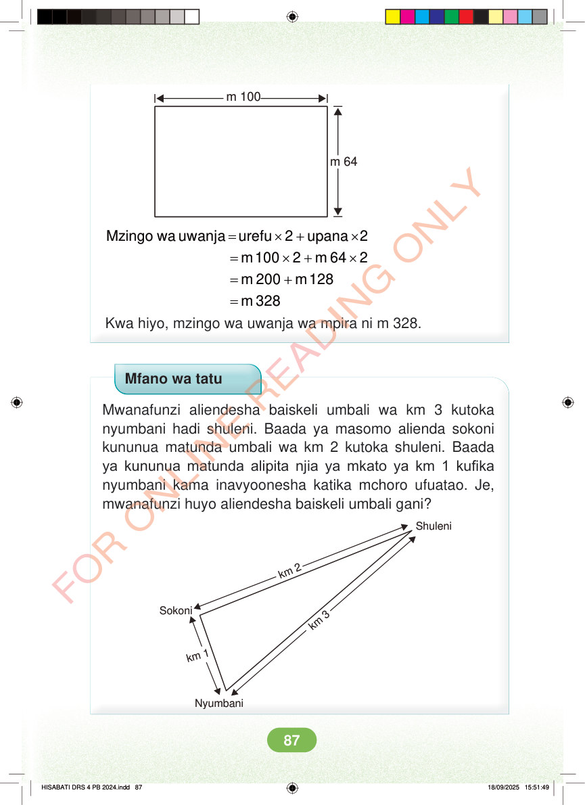

m 100 m 64 = × + × Mzingo wa uwanja urefu 2 upana 2 = × + × m 100 2 m 64 2 = + m 200 m 128 = m 328 Kwa hiyo, mzingo wa uwanja wa mpira ni m 328. Mfano wa tatu Mwanafunzi aliendesha baiskeli umbali wa km 3 kutoka nyumbani hadi shuleni. Baada ya masomo alienda sokoni kununua matunda umbali wa km 2 kutoka shuleni. Baada ya kununua matunda alipita njia ya mkato ya km 1 kufika nyumbani kama inavyoonesha katika mchoro ufuatao. Je, mwanafunzi huyo aliendesha baiskeli umbali gani? Shuleni km 2 Sokoni km 3 km 1 Nyumbani HISABATI DRS 4 PB 2024.indd 87 HISABATI DRS 4 PB 2024.indd 87 18/09/2025 15:51:49 18/09/2025 15:51:49